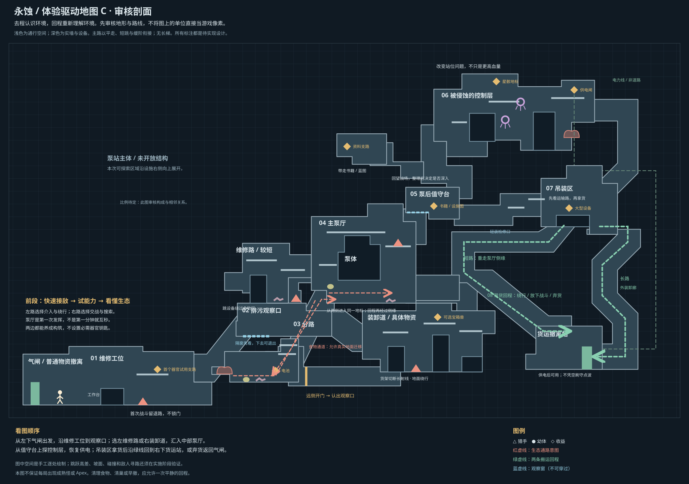

<!doctype html>
<html lang="zh-CN">
  <meta charset="utf-8" /><meta name="viewport" content="width=device-width,initial-scale=1" /><title>
    永蚀 · 体验驱动地图 C</title
  ><style>
    :root {
      color-scheme: dark;
    }
    * {
      box-sizing: border-box;
    }
    body {
      margin: 0;
      background: #101a23;
      color: #dbe6eb;
      font:
        16px/1.6 "Microsoft YaHei",
        sans-serif;
    }
    header {
      padding: 16px 24px;
      background: #17252e;
      border-bottom: 1px solid #49606d;
      position: sticky;
      top: 0;
      z-index: 2;
    }
    nav {
      display: flex;
      gap: 8px;
      flex-wrap: wrap;
    }
    a {
      color: #bed1dd;
    }
    nav a,
    button {
      padding: 8px 14px;
      background: #293e4b;
      border: 1px solid #526b79;
      color: #dbe6eb;
      text-decoration: none;
      cursor: pointer;
      font: inherit;
    }
    .active {
      background: #cdb078;
      color: #121b24;
    }
    header p {
      margin: 0 0 10px;
      color: #a6bdc9;
      font-size: 14px;
    }
    main {
      overflow: auto;
    }
    img {
      display: block;
      width: 100%;
      height: auto;
      min-width: 1000px;
    }
    footer {
      padding: 20px 30px;
      border-top: 1px solid #405360;
    }
  </style>
  <header>
    <p>体验驱动地图 C · 待确认，未接入游戏。局部图直接放大全图同一处，不另画一套房间。</p>
    <nav>
      <a href="?view=all" class="tab" data-view="all">全图</a
      ><a href="?view=start" class="tab" data-view="start">① 首战与生态观察</a
      ><a href="?view=fork" class="tab" data-view="fork">② 分路与泵厅</a
      ><a href="?view=deep" class="tab" data-view="deep">③ 深入与搬运</a
      ><button id="zoom">原尺寸 / 适应窗口</button><a href="experience-C.html">阅读体验稿 C</a>
    </nav>
  </header>
  <main>
    
  </main>
  <footer>
    审核重点：空间是否有辨识度、两条分路是否有意义、泵厅是否值得反复经过、重货回程是否保留选择。图确认后才接进游戏。
  </footer>
  <script type="module">
    const views = {
      all: "experience-map-C.svg",
      start: "experience-map-C-start.svg",
      fork: "experience-map-C-fork.svg",
      deep: "experience-map-C-deep.svg",
    };
    const key = new URLSearchParams(location.search).get("view") || "all";
    const img = document.getElementById("map");
    img.src = views[key] || views.all;
    document.querySelector('[data-view="' + (views[key] ? key : "all") + '"]').classList.add("active");
    let zoom = false;
    document.getElementById("zoom").addEventListener("click", () => {
      zoom = !zoom;
      img.style.width = zoom ? "2700px" : "100%";
    });
  </script>
</html>
